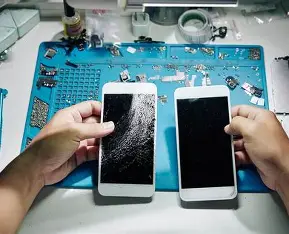

Our Services
We provide a variety of professional services to help our customers with their needs.
Our experienced team is committed to delivering high-quality solutions quickly and
efficiently.
Our services include customer support, product maintenance, technical assistance,
online consultation, and after-sales service. We always strive to provide excellent
service and ensure complete customer satisfaction.
Read More...
Our Services

table border="2" cellpadding="10" cellspacing="0">
| Sr. No. |
Service Name |
Description |
Duration |
| 1 |
Mobile Repair |
Complete repair of hardware and software issues. |
1-2 Days |
| 2 |
Screen Replacement |
Replacement of broken or damaged mobile screens. |
1 Hour |
| 3 |
Battery Replacement |
Installation of a new battery for better performance. |
30 Minutes |
| 4 |
Software Installation |
Operating system updates and software installation. |
45 Minutes |
| 5 |
Data Transfer |
Transfer contacts, photos, videos, and apps. |
30 Minutes |
| 6 |
Phone Exchange |
Exchange your old phone for a new one. |
Same Day |